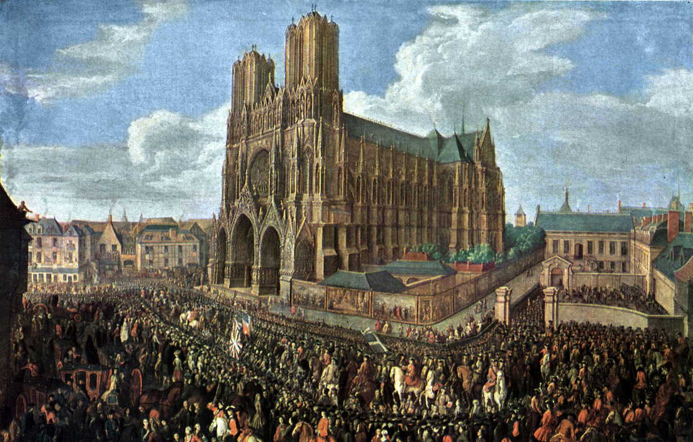
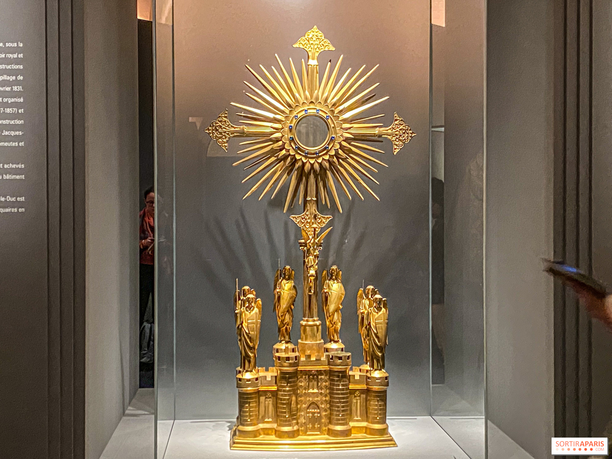
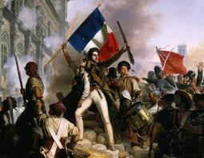
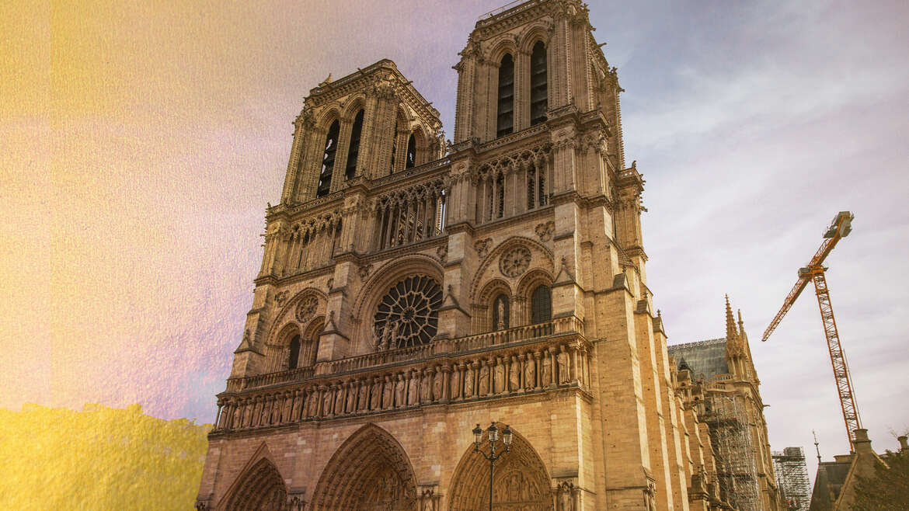
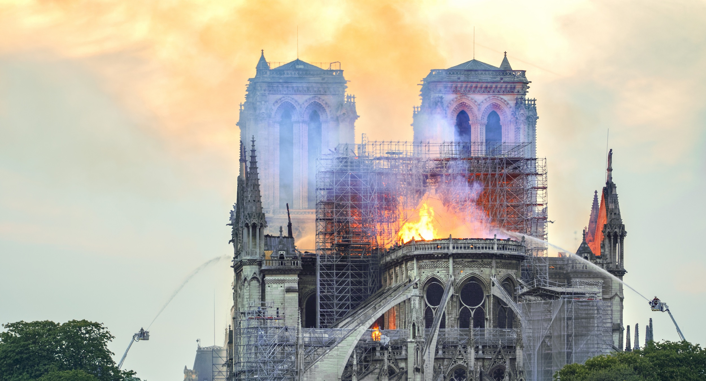
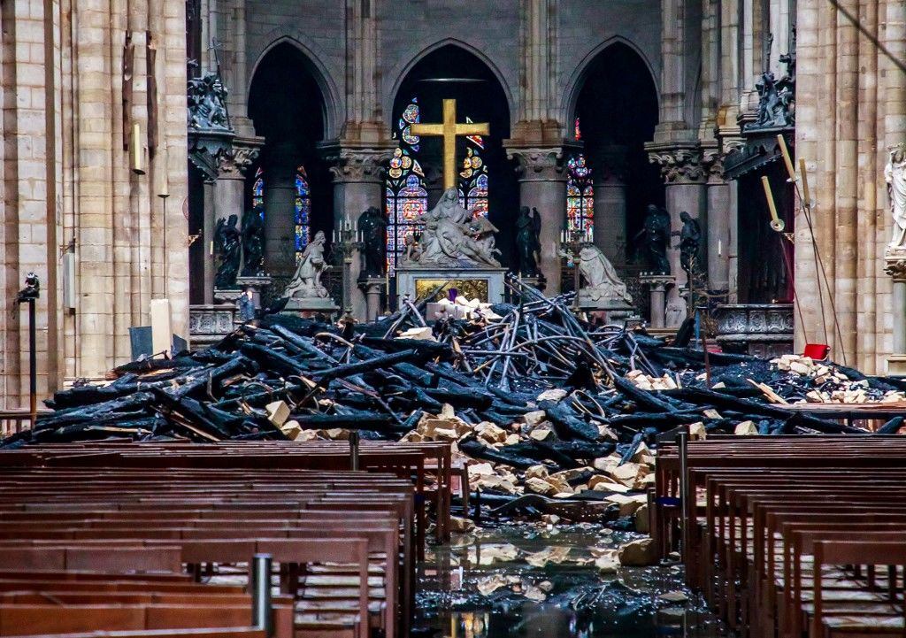

A Notre-Dame de Reims egyik a legfontosabb építészeti műemlékek a világon. Történelme több mint 800 éves, mely során létrejött a francia gótika egyik legszebb példája. Az épület a francia monarchia szimbóluma volt, és számtalan történelmi eseménynek adott helyet. A 2019-es tűzvész után jelenleg restaurálás alatt áll, de az újjáépítés folyamata jól halad. A templom nemcsak vallási znaczenia miatt fontos, hanem kulturális és történelmi szempontból is meghatározó szerepet játszik Franciaország és az egész európai művészetben.

A kezdetek (1163-1345)
A Notre-Dame de Reims építése 1163-ban kezdődött. Az építkezés több mint két évszázadon át tartott, és a francesa gótika egyik legfontosabb példájává vált.

Az aranykor (1345-1600)
A 14. és 15. századi periódus a Notre-Dame aranykorának tekinthető. Ebben az időszakban építették meg az ikonikus szörnyszobrok és rozetaablakokat.

Francia forradalom (1600-1850)
A francia forradalom alatt a Notre-Dame komoly károkat szenvedett. A 19. században Viollet-le-Duc végzett nagyot ért restaurálást az épületen.

Modern kor (1850-2019)
A 20. és 21. századi fejlemények során a Notre-Dame továbbra is az egyik legfontosabb építészeti műemlék maradt világszerte.

A tűzvész (2019)
Az április 15-i tűz súlyos károkat okozott, de az épület szerkezete megmaradt. Jelenleg egy nagy léptékű restaurálási program folyik.

Újjáépítés (2024-jelen)
Az építkezés 2024-re fejeződik be. A Notre-Dame ismét megnyitják a látogatók előtt az eredeti szépségével felújítva.